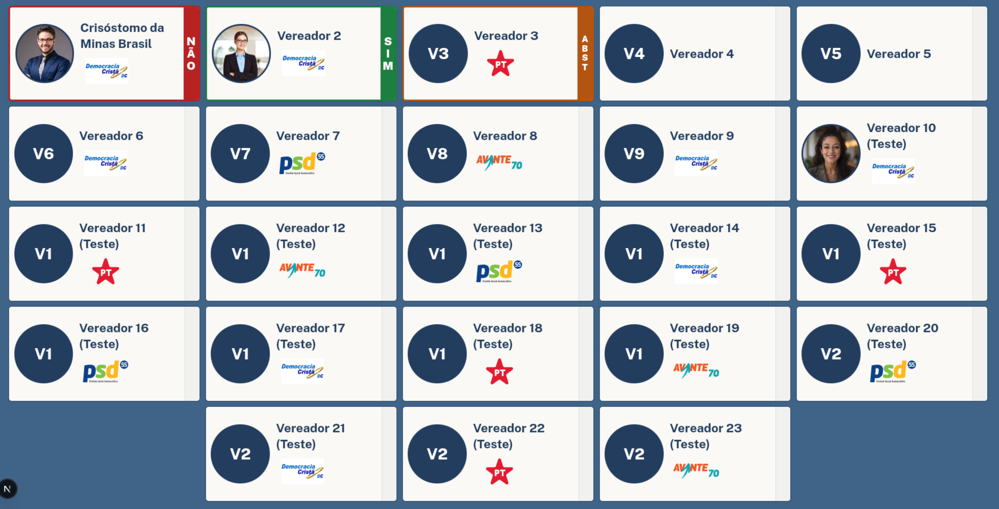
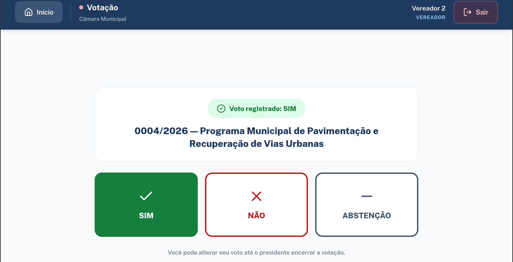
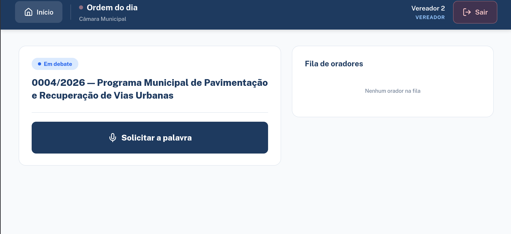

Quórum, prazo e iniciativa verificados automaticamente — do protocolo à publicação.
O SPL cobre tudo — do rascunho à publicação no Diário Oficial.
Todo o trâmite legislativo, rastreável e em conformidade com a LAI.
O SPL é a plataforma que conduz o processo legislativo completo da sua Câmara — protocolo, comissões, sessões plenárias, votações e sanção do prefeito — com o rigor de um processo formal, mesmo em câmaras sem assessoria jurídica própria.
Conversa de 15 minutos, sem custo e sem compromisso. Vamos entender o Regimento Interno da sua Câmara antes de qualquer coisa.



{{ caption }}
A maioria dos sistemas vendidos hoje pra câmaras municipais resolve um problema pequeno bem resolvido: a sessão com votação em telão. Bonito, rende foto, rende matéria no jornal local. Mas é só um momento do processo — e o processo inteiro continua na planilha, no papel, na memória do Secretário Legislativo.
No parecer que ninguém sabe se foi emitido. No quórum que alguém “achou” que estava correto. É aí que nasce o vício de forma que derruba uma lei meses ou anos depois.
O SPL foi construído pra cobrir esse processo inteiro — não só o momento de votação. Sessão ao vivo com painéis é um módulo do sistema, não o sistema todo. O motor de tramitação não deixa uma etapa ser pulada, verifica quórum antes de qualquer votação abrir, e funciona mesmo se a sua Câmara não tem advogado próprio.
Um momento: a sessão. Votação, painel, telão. O antes (protocolo, comissões, pareceres, prazos) e o depois (sanção, publicação) continuam manuais.
O processo inteiro, do primeiro rascunho até a publicação no Diário Oficial — com log imutável de cada ato e a sessão ao vivo como um dos módulos.
O que hoje só as grandes têm: processo rastreável de ponta a ponta — e continua aparecendo bem na sessão, pra imprensa e pra população.
Nenhuma dessas situações é falha sua. É a ausência de um processo que segure isso por você.
Já se pegou tentando lembrar em qual comissão está parado um projeto de dois anos atrás?
Já teve que explicar pro Presidente, sob pressão, onde exatamente uma proposição travou — sem ter certeza da resposta?
Já abriu uma votação e só depois percebeu que o quórum não batia?
Já sentiu que, se você sair de férias ou adoecer, ninguém mais sabe operar o processo do jeito certo?
Já viu a imprensa ou um cidadão pedir uma informação amparada pela LAI que devia estar pública — e não estava?
Já ficou com medo de que uma lei aprovada seja contestada depois por um erro de forma que ninguém percebeu na hora?
Cada proposição passa por um fluxo de estados controlado — e o sistema não deixa uma etapa ser pulada.
Antes de qualquer votação abrir, o sistema verifica sozinho se o quórum está presente. Ninguém mais “acha” que estava correto.
Toda ação fica registrada com autor, data e hora — e nada, nem voto nem parecer, pode ser alterado depois de registrado.
Sem assessoria jurídica (realidade da maioria), o Secretário preenche uma checklist formal de conformidade — que também fica registrada, protegendo a Câmara.
E sim: a sessão ao vivo, com check-in por tablet, quórum calculado automaticamente e dois telões acompanhando votação em tempo real, também está aqui. Mas ela é a ponta visível de um processo que está seguro por trás — não o produto inteiro.
O sistema não permite que uma etapa obrigatória seja pulada, então o risco jurídico que mais preocupa Presidente e Advogado da Câmara deixa de depender da memória de alguém.
Qualquer proposição, de qualquer época, tem histórico completo e rastreável. Ninguém mais pergunta “onde está isso” sem você saber responder na hora.
A checklist formal de conformidade documenta que a admissão foi feita com todo o cuidado possível, protegendo a Câmara mesmo na ausência de assessoria jurídica própria.
Nem você, nem o Administrador do sistema conseguem alterar um voto depois de encerrado. Isso tira qualquer contestação de credibilidade da mesa.
O portal público se alimenta sozinho do processo. Você não precisa lembrar de atualizar nada pra cumprir a lei de transparência.
Painéis com foto, partido e voto de cada vereador em tempo real. É o momento que rende matéria local e deixa o Presidente orgulhoso de mostrar.
Hoje, se o Secretário falta, o processo trava. Com o SPL, o processo continua registrado e visível pra qualquer um assumir.
Quóruns, prazos e tipos de proposição são configurados conforme a Lei Orgânica e o Regimento Interno da sua Câmara, não um padrão genérico.
Nossa primeira Câmara parceira inicia a implantação em 15 dias. Isso significa uma coisa boa pra quem fechar cedo: acompanhamento direto e próximo do time, sem fila de suporte genérico.
Nome e cargo do responsável técnico ou fundador do SPL + credencial que sustente autoridade no tema (experiência com câmaras municipais, formação jurídica, parceria institucional).
Depoimento da primeira Câmara implantada, capturado após 30–60 dias de uso, com foco em resultado concreto: dias reduzidos na tramitação, fim da dúvida sobre quórum.
Cada Câmara tem Regimento, número de vereadores e realidade diferentes. Por isso as condições são apresentadas na conversa — não numa tabela genérica.
Saber as condições para a minha CâmaraMotor completo de tramitação — 13+ estados mapeados, do rascunho à publicação
Verificação de quórum automática antes de qualquer votação
Modo de operação com ou sem assessoria jurídica própria
Portal público de transparência (LAI) alimentado automaticamente
Sessão ao vivo com check-in por tablet e painéis em tempo real
Configuração completa conforme o Regimento Interno da sua Câmara
Log de auditoria imutável de todo o processo
Contrato anual
Investimento à parte, sob consulta
Personalizadas conforme número de vereadores e regimento — apresentadas na conversa
“Não temos verba pra isso.”
Entendemos — orçamento de Câmara pequena é apertado. Por isso as condições são conversadas caso a caso, considerando o tamanho da sua Câmara. Antes de decidir que não cabe, vale entender o que cabe.
“Nosso Regimento Interno é muito diferente do padrão.”
Na verdade é o contrário do problema: o SPL foi desenhado justamente porque cada Câmara tem um Regimento diferente. Quóruns, prazos e tipos de proposição são configurados pro seu Regimento — não o seu Regimento que se adapta a um sistema genérico.
“Já usamos um sistema de câmara.”
A maioria dos sistemas do mercado resolve só a sessão — votação, painel, telão. O que acontece antes (protocolo, comissões, pareceres, prazos) e depois (sanção, publicação) continua manual. O SPL não compete com sistema de sessão: ele cobre o processo inteiro.
Direção sugerida: em venda institucional, a garantia que mais converte é reversão de risco de implantação — um período inicial de acompanhamento em que, se o sistema não se adequar ao Regimento da Câmara, o contrato pode ser encerrado sem multa. Fechada a condição, este bloco recebe o texto definitivo.
Estamos com as primeiras Câmaras parceiras entrando em implantação. Cada uma recebe acompanhamento direto do time — por isso não atendemos um número ilimitado ao mesmo tempo.
Sim — o SPL foi pensado justamente pra esse perfil. Ele foi desenhado pra câmaras de 9 a 23 vereadores, com equipe enxuta, onde o Secretário Legislativo costuma acumular quase tudo sozinho.
Sim. Quando não há Assessor Jurídico, o Secretário Legislativo preenche uma checklist formal de conformidade, que fica registrada e documentada — o processo continua seguro e rastreável.
O SPL é configurável — quóruns, prazos e tipos de proposição são parametrizados conforme a Lei Orgânica e o Regimento da sua Câmara. Na conversa inicial, mapeamos isso antes de qualquer contrato.
O SPL não é um sistema de “teste grátis” solto — ele acompanha o processo real da Câmara todos os dias e normalmente exige alguma customização de regimento. Por isso, o caminho é uma conversa de diagnóstico, onde mostramos o sistema funcionando com a realidade da sua Câmara antes de qualquer decisão.
[INSERIR PRAZO MÉDIO — depende da complexidade do Regimento Interno e ficará mais preciso depois da primeira implantação real, em andamento agora]
[INSERIR — modelo de suporte: canal, horário de atendimento, se há SLA]
[INSERIR CONDIÇÕES DE PAGAMENTO DO CONTRATO ANUAL]
Você não precisa resolver isso sozinho, com planilha e boa vontade.
Quero falar com um especialistaSem custo, sem compromisso. Vamos entender o Regimento da sua Câmara e mostrar exatamente como o SPL se encaixa nele.